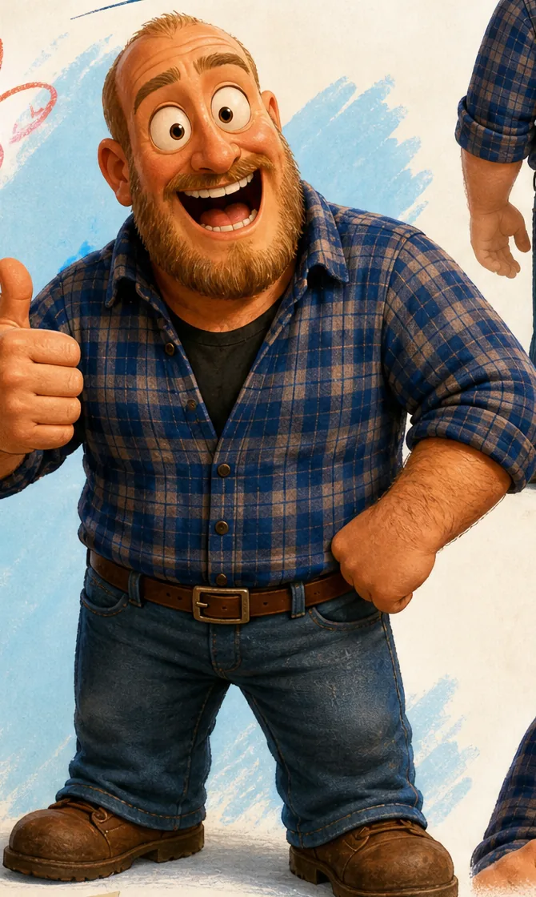

Porträt
Über mich

Ich bin Toni. Berlin, 40, vier Kinder. Das heißt: wenig Schlaf, volle Waschmaschinen und ein ziemlich gut trainierter Blick dafür, was wichtig ist und was nur so tut. Wer mit vier Kindern durch einen Berliner Winter kommt, hat für Hochglanz-Versprechen keine Geduld mehr übrig. Das prägt auch alles, was hier steht.
Ich hab lange Zeit Dinge mit Computern gebaut. Man lernt dabei, dass Systeme genau das machen, was man ihnen sagt, und Menschen zum Glück nicht. Irgendwann hab ich gemerkt, dass mich die Geschichten hinter den Dingen mehr interessieren als die Dinge selbst. Warum wir auf glänzende Versprechen reinfallen. Warum Kinder die besseren Fragen stellen. Warum eine ehrliche Niederlage mehr wert ist als ein geschönter Erfolg.
Diese Seite ist mein Platz dafür. Keine Kurse, kein Coaching, kein Trichter, der dich irgendwohin schiebt. Nur Geschichten, Gedanken und irgendwann auch was für eure Kids: Lernmaterial ohne Werbefallen und ohne Dark Patterns, weil meine eigenen Kinder die ersten Tester sind. Wenn du wissen willst, wofür das alles steht: Das Manifest hat fünf Punkte und kein Kleingedrucktes.